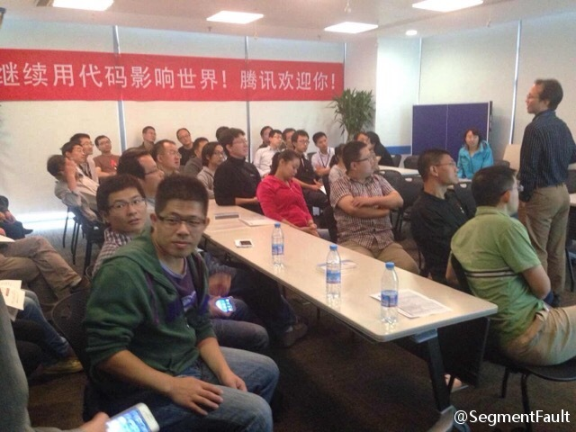

//@英式没品笑话百科:没区别吧……//@所长别开枪是我: 一模一样啊。。//@粽粽粽粽粽粽粽: 咋办 我觉得是一样的//@Minor斜川: 我觉得一样，我果然是个汉子//@屌絲打分蜻蜓隊長: 不，这就是一样的@文怡:老公：“我就想问，你买这么多一模一样的新衣服，意义何在呢？”我：“不一样啊，每件都不一样啊。”
回复@rabbitsohu:这很正常，没规定哪些话题应该是女人感兴趣的，还是男人感兴趣的。我现在做医疗美容用户社区，以女性为主，觉得自己不能算典型用户，觉得遗憾而已，需要花更多时间去了解其它女性用户是怎么想的。//@rabbitsohu:我也有同样困惑，属于女生的话题我似乎从来不感兴趣，这是为什么呢？@Ada李力:很早以前上班，因为女生少，中午吃饭是有固定饭搭子的，每过一段时间我就受不了饭桌上的话题了，老公，孩子，婆婆，翻来覆去的话题，我确实对这些内容毫无兴趣，唯一能做到的礼貌的就是把耳朵借出去听着~~~
各家公司轮番去摆招聘摊，比毕业那阵高校招聘季都热闹。要说，这二十年外企培养出的员工素质都很不错，执行力强。//@LUPA开源社区:转发微博@SegmentFault:据说是Adobe 抢人现场，各大公司HR 都去了! 
唉，好好的笑话被程序员们一参合，笑点就变啦.....//@_nearly转1: 爱上一匹斑马，我的家里没有草原//@邓草原: 在马戏团工作？//@出版人周筠: //@程序员邹欣:斑马一家的日常//@老赵: 哪儿有区别？//@时蝇喜箭: 斑马座的 //@Ada李力: @文怡:老公：“我就想问，你买这么多一模一样的新衣服，意义何在呢？”我：“不一样啊，每件都不一样啊。”
[翻白眼]//@孢子响马: 本来就没有笑点啊 //@Ada李力: 唉，好好的笑话被程序员们一参合，笑点就变啦.....//@_nearly转1: 爱上一匹斑马，我的家里没有草原//@邓草原: 在马戏团工作？//@出版人周筠: //@程序员邹欣:斑马一家的日常//@老赵: 哪儿有区别？//@时蝇喜箭: 斑马座的 //@文怡:老公：“我就想问，你买这么多一模一样的新衣服，意义何在呢？”我：“不一样啊，每件都不一样啊。”
虎落平原被犬欺。//@Easy:我当时想，如果答案真是mod2就不是测智商了，是测智障。后来原po已经解释了，去看评论吧。 //@唐巧_boy:这道题无关经验吧，纯智商问题 //@6david9:同意！面试是为了知道面试者会什么，有效期限内能否胜任面试职位@王在祥:面了一个9年经验的lBM，埃森哲的架构师，连判断一个数是奇是偶都不会写。这年头，要如何无知才能够务虚如此？ 芳村
当然得爱钱，不然它怎么能进到你的口袋里呢。//@艾玛_Y:还是觉得爱钱也挺好的 //@Ada李力:嗯@好投网:走到人生的某一个阶段时，我决心要成为一个富有之人。这并不是因为爱钱的缘故，而是为了追求那种独立自主的感觉。我喜欢能够自由地说出自己的想法，而不是受到他人意志的左右。——查理·芒格